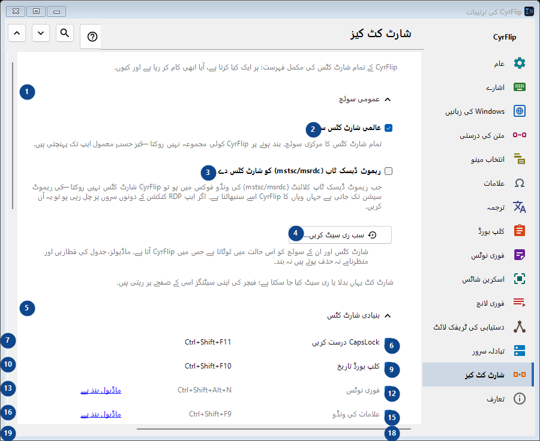
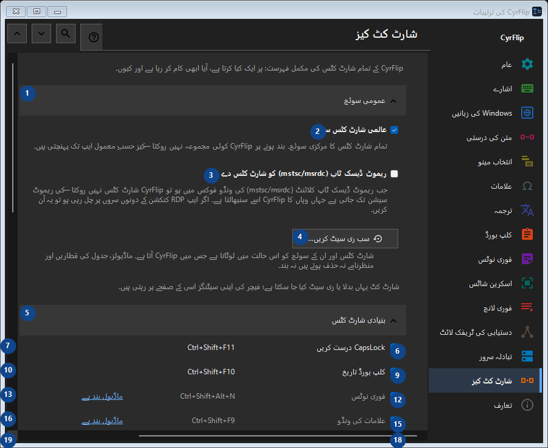

شارٹ کٹ کیز
مقصد
CyrFlip کے تمام شارٹ کٹس کی مکمل فہرست: ہر ایک کیا کرتا ہے، آیا ابھی کام کر رہا ہے اور کیوں۔


استعمال کی ترتیب
ترتیبات فوراً لاگو ہوتی ہیں۔ کوئی لازمی ترتیب نہیں؛ نیچے کے گروپ استعمال کریں۔
عناصر
1. عمومی سوئچ
درج شدہ کارروائی کے لیے یہ حکم استعمال کریں۔ قبول کرنے سے پہلے تصدیق پڑھیں۔
آپ کے شارٹ کٹ2. عالمی شارٹ کٹس سنیں
تمام شارٹ کٹس کا مرکزی سوئچ۔ بند ہونے پر CyrFlip کوئی مجموعہ نہیں روکتا — کیز حسبِ معمول ایپ تک پہنچتی ہیں۔
آپ کے شارٹ کٹ3. ریموٹ ڈیسک ٹاپ (mstsc/msrdc) کو شارٹ کٹس دے دیں
جب ریموٹ ڈیسک ٹاپ کلائنٹ (mstsc/msrdc) کی ونڈو فوکس میں ہو تو CyrFlip شارٹ کٹس نہیں روکتا — کی ریموٹ سیشن تک جاتی ہے جہاں وہاں کا CyrFlip اسے سنبھالتا ہے۔ اگر ایپ RDP کنکشن کے دونوں سروں پر چل رہی ہو تو یہ آن کریں۔
آپ کے شارٹ کٹ4. سب ری سیٹ کریں...
شارٹ کٹس اور ان کے سوئچ کو اس حالت میں لوٹاتا ہے جس میں CyrFlip آتا ہے۔ ماڈیولز، جدول کی قطاریں اور منظرنامے نہ حذف ہوتے ہیں نہ بند۔
آپ کے شارٹ کٹ5. بنیادی شارٹ کٹس
درج شدہ کارروائی کے لیے یہ حکم استعمال کریں۔ قبول کرنے سے پہلے تصدیق پڑھیں۔
آپ کے شارٹ کٹ6. CapsLock درست کریں Ctrl+Shift+F11
درج شدہ کارروائی کے لیے یہ حکم استعمال کریں۔ قبول کرنے سے پہلے تصدیق پڑھیں۔
آپ کے شارٹ کٹ7. تبدیل کریں... - CapsLock درست کریں Ctrl+Shift+F11
درج شدہ کارروائی کے لیے یہ حکم استعمال کریں۔ قبول کرنے سے پہلے تصدیق پڑھیں۔
آپ کے شارٹ کٹ8. ڈیفالٹ بنائیں - CapsLock درست کریں Ctrl+Shift+F11
درج شدہ کارروائی کے لیے یہ حکم استعمال کریں۔ قبول کرنے سے پہلے تصدیق پڑھیں۔ یہ عنصر ابھی دستیاب نہیں۔ پہلے خصوصیت فعال کریں یا اندراج منتخب کریں۔
آپ کے شارٹ کٹ9. کلپ بورڈ تاریخ Ctrl+Shift+F10
درج شدہ کارروائی کے لیے یہ حکم استعمال کریں۔ قبول کرنے سے پہلے تصدیق پڑھیں۔
آپ کے شارٹ کٹ10. تبدیل کریں... - کلپ بورڈ تاریخ Ctrl+Shift+F10
درج شدہ کارروائی کے لیے یہ حکم استعمال کریں۔ قبول کرنے سے پہلے تصدیق پڑھیں۔
آپ کے شارٹ کٹ11. ڈیفالٹ بنائیں - کلپ بورڈ تاریخ Ctrl+Shift+F10
درج شدہ کارروائی کے لیے یہ حکم استعمال کریں۔ قبول کرنے سے پہلے تصدیق پڑھیں۔ یہ عنصر ابھی دستیاب نہیں۔ پہلے خصوصیت فعال کریں یا اندراج منتخب کریں۔
آپ کے شارٹ کٹ12. فوری نوٹس Ctrl+Shift+Alt+N
درج شدہ کارروائی کے لیے یہ حکم استعمال کریں۔ قبول کرنے سے پہلے تصدیق پڑھیں۔
آپ کے شارٹ کٹ13. تبدیل کریں... - فوری نوٹس Ctrl+Shift+Alt+N
درج شدہ کارروائی کے لیے یہ حکم استعمال کریں۔ قبول کرنے سے پہلے تصدیق پڑھیں۔
آپ کے شارٹ کٹ14. ڈیفالٹ بنائیں - فوری نوٹس Ctrl+Shift+Alt+N
درج شدہ کارروائی کے لیے یہ حکم استعمال کریں۔ قبول کرنے سے پہلے تصدیق پڑھیں۔ یہ عنصر ابھی دستیاب نہیں۔ پہلے خصوصیت فعال کریں یا اندراج منتخب کریں۔
آپ کے شارٹ کٹ15. علامات کی ونڈو Ctrl+Shift+F9
درج شدہ کارروائی کے لیے یہ حکم استعمال کریں۔ قبول کرنے سے پہلے تصدیق پڑھیں۔
آپ کے شارٹ کٹ16. تبدیل کریں... - علامات کی ونڈو Ctrl+Shift+F9
درج شدہ کارروائی کے لیے یہ حکم استعمال کریں۔ قبول کرنے سے پہلے تصدیق پڑھیں۔
آپ کے شارٹ کٹ17. ڈیفالٹ بنائیں - علامات کی ونڈو Ctrl+Shift+F9
درج شدہ کارروائی کے لیے یہ حکم استعمال کریں۔ قبول کرنے سے پہلے تصدیق پڑھیں۔ یہ عنصر ابھی دستیاب نہیں۔ پہلے خصوصیت فعال کریں یا اندراج منتخب کریں۔
آپ کے شارٹ کٹ18. دستیابی کی ٹریفک لائٹ Ctrl+Shift+Alt+T
درج شدہ کارروائی کے لیے یہ حکم استعمال کریں۔ قبول کرنے سے پہلے تصدیق پڑھیں۔
آپ کے شارٹ کٹ19. تبدیل کریں... - دستیابی کی ٹریفک لائٹ Ctrl+Shift+Alt+T
درج شدہ کارروائی کے لیے یہ حکم استعمال کریں۔ قبول کرنے سے پہلے تصدیق پڑھیں۔
آپ کے شارٹ کٹ20. ڈیفالٹ بنائیں - دستیابی کی ٹریفک لائٹ Ctrl+Shift+Alt+T
درج شدہ کارروائی کے لیے یہ حکم استعمال کریں۔ قبول کرنے سے پہلے تصدیق پڑھیں۔ یہ عنصر ابھی دستیاب نہیں۔ پہلے خصوصیت فعال کریں یا اندراج منتخب کریں۔
آپ کے شارٹ کٹ21. اسکرین کے حصے کا اسکرین شاٹ Ctrl+F12
درج شدہ کارروائی کے لیے یہ حکم استعمال کریں۔ قبول کرنے سے پہلے تصدیق پڑھیں۔
آپ کے شارٹ کٹ22. تبدیل کریں... - اسکرین کے حصے کا اسکرین شاٹ Ctrl+F12
درج شدہ کارروائی کے لیے یہ حکم استعمال کریں۔ قبول کرنے سے پہلے تصدیق پڑھیں۔
آپ کے شارٹ کٹ23. ڈیفالٹ بنائیں - اسکرین کے حصے کا اسکرین شاٹ Ctrl+F12
درج شدہ کارروائی کے لیے یہ حکم استعمال کریں۔ قبول کرنے سے پہلے تصدیق پڑھیں۔ یہ عنصر ابھی دستیاب نہیں۔ پہلے خصوصیت فعال کریں یا اندراج منتخب کریں۔
آپ کے شارٹ کٹ24. پوری اسکرین کا اسکرین شاٹ Ctrl+F11
درج شدہ کارروائی کے لیے یہ حکم استعمال کریں۔ قبول کرنے سے پہلے تصدیق پڑھیں۔
آپ کے شارٹ کٹ25. تبدیل کریں... - پوری اسکرین کا اسکرین شاٹ Ctrl+F11
درج شدہ کارروائی کے لیے یہ حکم استعمال کریں۔ قبول کرنے سے پہلے تصدیق پڑھیں۔
آپ کے شارٹ کٹ26. ڈیفالٹ بنائیں - پوری اسکرین کا اسکرین شاٹ Ctrl+F11
درج شدہ کارروائی کے لیے یہ حکم استعمال کریں۔ قبول کرنے سے پہلے تصدیق پڑھیں۔ یہ عنصر ابھی دستیاب نہیں۔ پہلے خصوصیت فعال کریں یا اندراج منتخب کریں۔
آپ کے شارٹ کٹ27. رنائی کے ساتھ حصے کا اسکرین شاٹ Ctrl+Alt+F12
درج شدہ کارروائی کے لیے یہ حکم استعمال کریں۔ قبول کرنے سے پہلے تصدیق پڑھیں۔
آپ کے شارٹ کٹ28. تبدیل کریں... - رنائی کے ساتھ حصے کا اسکرین شاٹ Ctrl+Alt+F12
درج شدہ کارروائی کے لیے یہ حکم استعمال کریں۔ قبول کرنے سے پہلے تصدیق پڑھیں۔
آپ کے شارٹ کٹ29. ڈیفالٹ بنائیں - رنائی کے ساتھ حصے کا اسکرین شاٹ Ctrl+Alt+F12
درج شدہ کارروائی کے لیے یہ حکم استعمال کریں۔ قبول کرنے سے پہلے تصدیق پڑھیں۔ یہ عنصر ابھی دستیاب نہیں۔ پہلے خصوصیت فعال کریں یا اندراج منتخب کریں۔
آپ کے شارٹ کٹ30. رنائی کے ساتھ پوری اسکرین کا اسکرین شاٹ Ctrl+Alt+F11
درج شدہ کارروائی کے لیے یہ حکم استعمال کریں۔ قبول کرنے سے پہلے تصدیق پڑھیں۔
آپ کے شارٹ کٹ31. تبدیل کریں... - رنائی کے ساتھ پوری اسکرین کا اسکرین شاٹ Ctrl+Alt+F11
درج شدہ کارروائی کے لیے یہ حکم استعمال کریں۔ قبول کرنے سے پہلے تصدیق پڑھیں۔
آپ کے شارٹ کٹ32. ڈیفالٹ بنائیں - رنائی کے ساتھ پوری اسکرین کا اسکرین شاٹ Ctrl+Alt+F11
درج شدہ کارروائی کے لیے یہ حکم استعمال کریں۔ قبول کرنے سے پہلے تصدیق پڑھیں۔ یہ عنصر ابھی دستیاب نہیں۔ پہلے خصوصیت فعال کریں یا اندراج منتخب کریں۔
آپ کے شارٹ کٹ33. اسکرین شاٹ فولڈر کھولیں Ctrl+F10
درج شدہ کارروائی کے لیے یہ حکم استعمال کریں۔ قبول کرنے سے پہلے تصدیق پڑھیں۔
آپ کے شارٹ کٹ34. تبدیل کریں... - اسکرین شاٹ فولڈر کھولیں Ctrl+F10
درج شدہ کارروائی کے لیے یہ حکم استعمال کریں۔ قبول کرنے سے پہلے تصدیق پڑھیں۔
آپ کے شارٹ کٹ35. ڈیفالٹ بنائیں - اسکرین شاٹ فولڈر کھولیں Ctrl+F10
درج شدہ کارروائی کے لیے یہ حکم استعمال کریں۔ قبول کرنے سے پہلے تصدیق پڑھیں۔ یہ عنصر ابھی دستیاب نہیں۔ پہلے خصوصیت فعال کریں یا اندراج منتخب کریں۔
آپ کے شارٹ کٹ36. کی بورڈ سے مینو کھولیں Ctrl+Shift+Alt+M
درج شدہ کارروائی کے لیے یہ حکم استعمال کریں۔ قبول کرنے سے پہلے تصدیق پڑھیں۔
آپ کے شارٹ کٹ37. تبدیل کریں... - کی بورڈ سے مینو کھولیں Ctrl+Shift+Alt+M
درج شدہ کارروائی کے لیے یہ حکم استعمال کریں۔ قبول کرنے سے پہلے تصدیق پڑھیں۔
آپ کے شارٹ کٹ38. ڈیفالٹ بنائیں - کی بورڈ سے مینو کھولیں Ctrl+Shift+Alt+M
درج شدہ کارروائی کے لیے یہ حکم استعمال کریں۔ قبول کرنے سے پہلے تصدیق پڑھیں۔ یہ عنصر ابھی دستیاب نہیں۔ پہلے خصوصیت فعال کریں یا اندراج منتخب کریں۔
آپ کے شارٹ کٹ39. کلپ بورڈ سرور پر بھیجیں
درج شدہ کارروائی کے لیے یہ حکم استعمال کریں۔ قبول کرنے سے پہلے تصدیق پڑھیں۔
آپ کے شارٹ کٹ40. تبدیل کریں... - کلپ بورڈ سرور پر بھیجیں
درج شدہ کارروائی کے لیے یہ حکم استعمال کریں۔ قبول کرنے سے پہلے تصدیق پڑھیں۔
آپ کے شارٹ کٹ41. ڈیفالٹ بنائیں - کلپ بورڈ سرور پر بھیجیں
درج شدہ کارروائی کے لیے یہ حکم استعمال کریں۔ قبول کرنے سے پہلے تصدیق پڑھیں۔ یہ عنصر ابھی دستیاب نہیں۔ پہلے خصوصیت فعال کریں یا اندراج منتخب کریں۔
آپ کے شارٹ کٹ42. سرور سے کلپ بورڈ حاصل کریں
درج شدہ کارروائی کے لیے یہ حکم استعمال کریں۔ قبول کرنے سے پہلے تصدیق پڑھیں۔
آپ کے شارٹ کٹ43. تبدیل کریں... - سرور سے کلپ بورڈ حاصل کریں
درج شدہ کارروائی کے لیے یہ حکم استعمال کریں۔ قبول کرنے سے پہلے تصدیق پڑھیں۔
آپ کے شارٹ کٹ44. ڈیفالٹ بنائیں - سرور سے کلپ بورڈ حاصل کریں
درج شدہ کارروائی کے لیے یہ حکم استعمال کریں۔ قبول کرنے سے پہلے تصدیق پڑھیں۔ یہ عنصر ابھی دستیاب نہیں۔ پہلے خصوصیت فعال کریں یا اندراج منتخب کریں۔
آپ کے شارٹ کٹ45. ماؤس
درج شدہ کارروائی کے لیے یہ حکم استعمال کریں۔ قبول کرنے سے پہلے تصدیق پڑھیں۔
آپ کے شارٹ کٹ46. تبدیل کریں... - انتخاب پر مینو Ctrl + دایاں ماؤس بٹن
درج شدہ کارروائی کے لیے یہ حکم استعمال کریں۔ قبول کرنے سے پہلے تصدیق پڑھیں۔
آپ کے شارٹ کٹ47. ڈیفالٹ بنائیں - انتخاب پر مینو Ctrl + دایاں ماؤس بٹن
درج شدہ کارروائی کے لیے یہ حکم استعمال کریں۔ قبول کرنے سے پہلے تصدیق پڑھیں۔ یہ عنصر ابھی دستیاب نہیں۔ پہلے خصوصیت فعال کریں یا اندراج منتخب کریں۔
آپ کے شارٹ کٹ48. لے آؤٹ تبدیلی
درج شدہ کارروائی کے لیے یہ حکم استعمال کریں۔ قبول کرنے سے پہلے تصدیق پڑھیں۔
آپ کے شارٹ کٹ49. ترجمہ
درج شدہ کارروائی کے لیے یہ حکم استعمال کریں۔ قبول کرنے سے پہلے تصدیق پڑھیں۔
آپ کے شارٹ کٹ50. فوری لانچ
درج شدہ کارروائی کے لیے یہ حکم استعمال کریں۔ قبول کرنے سے پہلے تصدیق پڑھیں۔
آپ کے شارٹ کٹ51. Windows
درج شدہ کارروائی کے لیے یہ حکم استعمال کریں۔ قبول کرنے سے پہلے تصدیق پڑھیں۔
آپ کے شارٹ کٹ